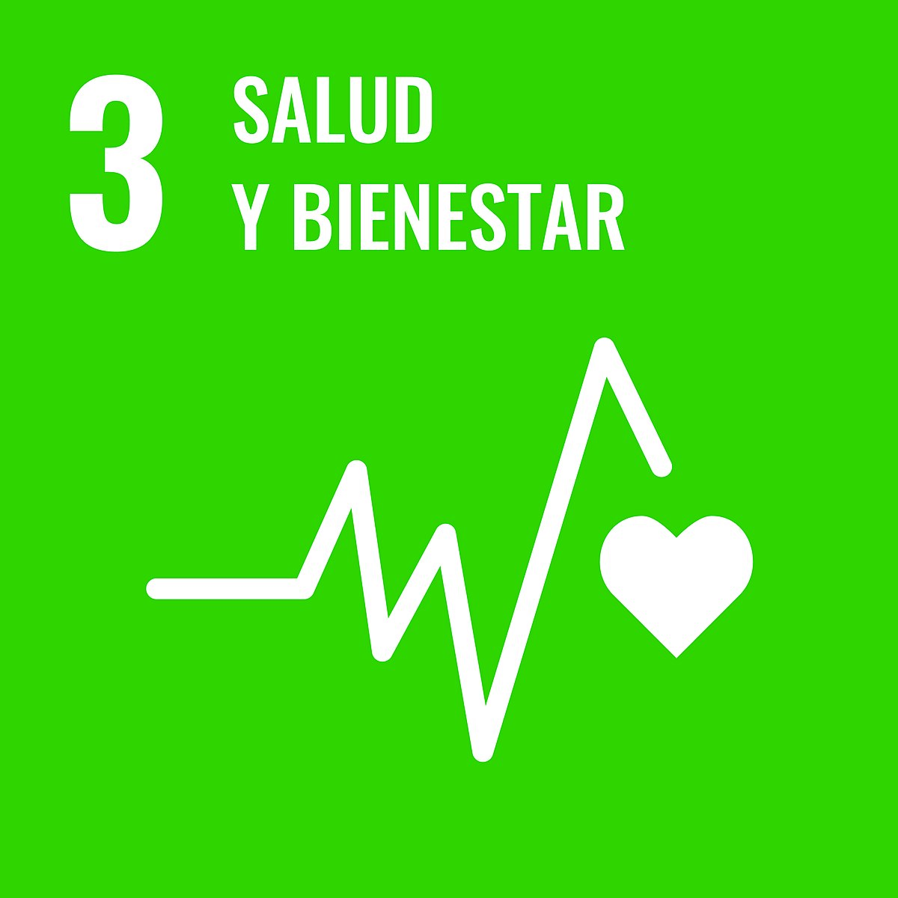
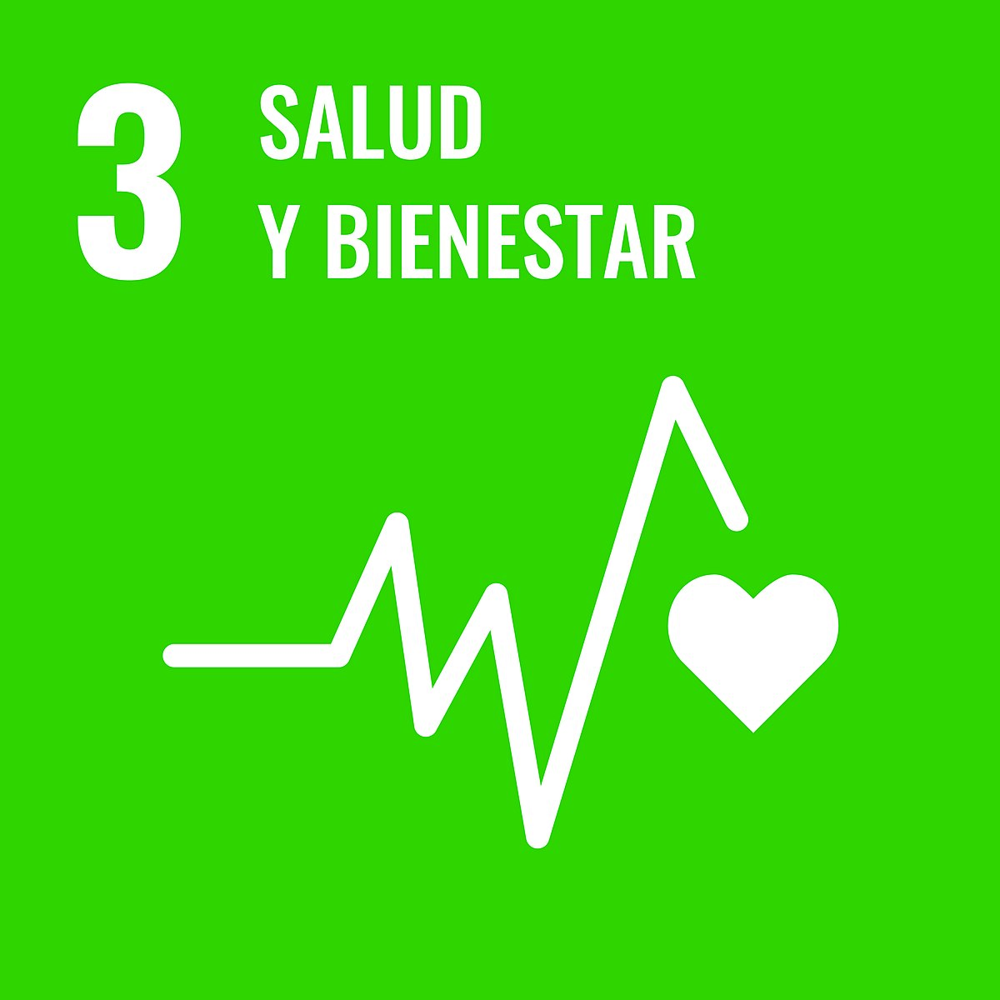

Introducción
En AliadODS, los jugadores se sumergen en una experiencia lúdica y reflexiva que explora las posibles escenarios del año 2050, donde la humanidad enfrenta las consecuencias de sus decisiones pasadas. A través de mecánicas de estrategia, sabotaje y alianza política, los participantes deben navegar por dilemas éticos y decisiones críticas que determinarán el destino de su mundo.
Un diseño comprometido y educativo
El juego no solo ofrece entretenimiento, sino que también busca sensibilizar sobre la importancia de tomar decisiones conscientes para construir un futuro sostenible. AliadODS está comprometido con los Objetivos de Desarrollo Sostenible (ODS) de las Naciones Unidas. Cada elemento del juego ha sido cuidadosamente diseñado para fomentar la reflexión sobre temas como el cambio climático, la justicia social y la economía sostenible. El proceso de diseño ha seguido principios de sostenibilidad, utilizando materiales ecológicos y prácticas de fabricación responsables. De esta manera, el juego se posiciona como una herramienta educativa que busca empoderar a los jugadores para que comprendan y se comprometan con los desafíos globales que enfrentamos.
Los Objetivos de Desarrollo Sostenible
¿Qué son los ODS?
Los Objetivos de Desarrollo Sostenible (ODS) son una iniciativa global adoptada por las Naciones Unidas en 2015, que consta de 17 objetivos interconectados diseñados para abordar los desafíos más urgentes que enfrenta el mundo, como la pobreza, la desigualdad, el cambio climático, la paz y la justicia. Estos objetivos buscan promover un desarrollo equilibrado que integre las dimensiones económica, social y ambiental, garantizando que nadie quede atrás. Cada ODS cuenta con metas específicas que orientan las acciones de gobiernos, empresas y sociedad civil hacia un futuro más justo y sostenible.
Jugando hacia la sostenibilidad
En nuestro juego, nos hemos propuesto concienciar especialmente sobre el Objetivo 11: Ciudades y comunidades sostenibles. Este objetivo busca lograr que las ciudades y los asentamientos humanos sean inclusivos, seguros, resilientes y sostenibles, reconociendo que las ciudades representan el futuro del modo de vida global. Se espera que para 2050, el 70 % de la población mundial viva en zonas urbanas, lo que hace aún más urgente la necesidad de planificar y gestionar el crecimiento urbano de manera sostenible. A través del juego, los participantes toman decisiones que afectan el desarrollo de su ciudad en diferentes escenarios futuros, promoviendo la reflexión sobre la importancia de construir entornos urbanos que prioricen el bienestar de todos sus habitantes y el respeto por el medio ambiente.

Además, el juego aborda indirectamente otros ODS como el Objetivo 15: La Vida de Ecosistemas Terrestres y el Objetivo 3: La Salud y Bienestar, al presentar situaciones que implican la conservación de la biodiversidad y la mejora de la calidad de vida urbana. De esta manera, buscamos que los jugadores comprendan la interconexión entre las decisiones locales y los desafíos globales, empoderándolos para ser agentes de cambio hacia un futuro más sostenible.
 

Los Escenarios de 2050
Post-Antropoceno
El primer escenario es el Post-Antropoceno, donde la humanidad ha logrado un equilibrio con la naturaleza, reduciendo su impacto ambiental y viviendo en armonía con los ecosistemas. En este mundo, las políticas sostenibles y la cooperación global han permitido una recuperación significativa de la biodiversidad y la estabilidad climática.
Greentocracia
En contraste, el escenario de Greentocracia presenta una sociedad donde las decisiones políticas están dominadas por criterios ecológicos. Los líderes son elegidos en función de su compromiso con la sostenibilidad, y las políticas públicas priorizan la protección del medio ambiente, aunque a veces a costa de la libertad individual y la innovación.
Humans Inc.
El tercer escenario, Humans Inc., imagina un futuro donde las grandes corporaciones han absorbido el poder gubernamental, estableciendo un sistema económico centrado en el lucro y la eficiencia. Aunque la tecnología ha avanzado, las desigualdades sociales y la explotación de recursos naturales son prevalentes, y la sostenibilidad se ve como una estrategia de marketing más que una prioridad real.
Extinction Express
Finalmente, el escenario de Extinction Express describe un mundo donde la falta de acción frente a la crisis climática y la degradación ambiental ha llevado a un colapso ecológico irreversible. Las especies han desaparecido, los ecosistemas están destruidos y la humanidad lucha por sobrevivir en un entorno hostil.
A través de estos escenarios, el juego invita a los jugadores a reflexionar sobre las posibles consecuencias de nuestras decisiones actuales y a considerar cómo podemos influir en el futuro para crear un mundo más sostenible y equitativo.